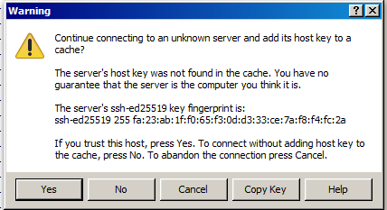

Troubleshooting#
Walltime issues#
If you get from your job output an error message similar to this:
=>> PBS: job killed: walltime <value in seconds> exceeded limit <value in seconds>
This occurs when your job did not complete within the requested walltime. See section on Specifying Walltime for more information about how to request the walltime. It is recommended to use checkpointing if the job requires 72 hours of walltime or more to be executed.
Out of quota issues#
Sometimes a job hangs at some point or it stops writing in the disk. These errors are usually related to the quota usage. You may have reached your quota limit at some storage endpoint. You should move (or remove) the data to a different storage endpoint (or request more quota) to be able to write to the disk and then resubmit the jobs.
Another option is to request extra quota for your VO to the VO moderator/s. See section on Pre-defined user directories and Pre-defined quotas for more information about quotas and how to use the storage endpoints in an efficient way.
Issues connecting to login node#
If you are confused about the SSH public/private key pair concept, maybe the key/lock analogy in How do SSH keys work? can help.
If you have errors that look like:
vsc40000@login.hpc.ugent.be: Permission denied
or you are experiencing problems with connecting, here is a list of things to do that should help:
-
Keep in mind that it an take up to an hour for your VSC account to become active after it has been approved; until then, logging in to your VSC account will not work.
-
Make sure you are connecting from an IP address that is allowed to access the VSC login nodes, see section Connection restrictions for more information.
-
Please double/triple check your VSC login ID. It should look something like vsc40000: the letters
vsc, followed by exactly 5 digits. Make sure it's the same one as the one on https://account.vscentrum.be/. -
You previously connected to the HPC from another machine, but now have another machine? Please follow the procedure for adding additional keys in section Adding multiple SSH public keys. You may need to wait for 15-20 minutes until the SSH public key(s) you added become active.
-
When using an SSH key in a non-default location, make sure you supply the path of the private key (and not the path of the public key) to
ssh.id_rsa.pubis the usual filename of the public key,id_rsais the usual filename of the private key. (See also section Connect) -
If you have multiple private keys on your machine, please make sure you are using the one that corresponds to (one of) the public key(s) you added on https://account.vscentrum.be/.
-
Please do not use someone else's private keys. You must never share your private key, they're called private for a good reason.
If you've tried all applicable items above and it doesn't solve your problem, please contact hpc@ugent.be and include the following information:
Please add -vvv as a flag to ssh like:
ssh -vvv vsc40000@login.hpc.ugent.be
and include the output of that command in the message.
Security warning about invalid host key#
If you get a warning that looks like the one below, it is possible that someone is trying to intercept the connection between you and the system you are connecting to. Another possibility is that the host key of the system you are connecting to has changed.
You will need to verify that the fingerprint shown in the dialog matches one of the following fingerprints:
- ssh-rsa 2048 10:2f:31:21:04:75:cb:ed:67:e0:d5:0c:a1:5a:f4:78
- ssh-rsa 2048 SHA256:W8Wz0/FkkCR2ulN7+w8tNI9M0viRgFr2YlHrhKD2Dd0
- ssh-ed25519 255 19:28:76:94:52:9d:ff:7d:fb:8b:27:b6:d7:69:42:eb
- ssh-ed25519 256 SHA256:8AJg3lPN27y6i+um7rFx3xoy42U8ZgqNe4LsEycHILA
- ssh-ecdsa 256 e6:d2:9c:d8:e7:59:45:03:4a:1f:dc:96:62:29:9c:5f
- ssh-ecdsa 256 SHA256:C8TVx0w8UjGgCQfCmEUaOPxJGNMqv2PXLyBNODe5eOQ
Do not click "Yes" until you verified the fingerprint. Do not press "No" in any case.
If it the fingerprint matches, click "Yes".
If it doesn't (like in the example) or you are in doubt, take a screenshot, press "Cancel" and contact hpc@ugent.be.
Note: it is possible that the ssh-ed25519 fingerprint starts with ssh-ed25519 255
rather than ssh-ed25519 256 (or vice versa), depending on the PuTTY version you are using.
It is safe to ignore this 255 versus 256 difference, but the part after should be
identical.
If you use X2Go client, you might get one of the following fingerprints:
- ssh-rsa 2048 53:25:8c:1e:72:8b:ce:87:3e:54:12:44:a7:13:1a:89:e4:15:b6:8e
- ssh-ed25519 255 e3:cc:07:64:78:80:28:ec:b8:a8:8f:49:44:d1:1e:dc:cc:0b:c5:6b
- ssh-ecdsa 256 67:6c:af:23:cc:a1:72:09:f5:45:f1:60:08:e8:98:ca:31:87:58:6c
If you get a message "Host key for server changed", do not click "No" until you verified the fingerprint.
If the fingerprint matches, click "No", and in the next pop-up screen ("if you accept the new host key..."), press "Yes".
If it doesn't, or you are in doubt, take a screenshot, press "Yes" and contact hpc@ugent.be.
DOS/Windows text format#
If you get errors like:
qsub fibo.pbs
qsub: script is written in DOS/Windows text format
or
sbatch: error: Batch script contains DOS line breaks (\r\n)
It's probably because you transferred the files from a Windows computer.
See the section about dos2unix in Linux tutorial to fix this error.
Warning message when first connecting to new host#
If you use X2Go, then you might get another fingerprint, then make sure that the fingerprint is displayed is one of the following ones:
- ssh-rsa 2048 53:25:8c:1e:72:8b:ce:87:3e:54:12:44:a7:13:1a:89:e4:15:b6:8e
- ssh-ed25519 255 e3:cc:07:64:78:80:28:ec:b8:a8:8f:49:44:d1:1e:dc:cc:0b:c5:6b
- ssh-ecdsa 256 67:6c:af:23:cc:a1:72:09:f5:45:f1:60:08:e8:98:ca:31:87:58:6c
If it does, type yes. If it doesn't, please contact support: hpc@ugent.be.
The first time you make a connection to the login node, a Security Alert will appear and you will be asked to verify the authenticity of the login node.
Make sure the fingerprint in the alert matches one of the following:
- ssh-rsa 2048 10:2f:31:21:04:75:cb:ed:67:e0:d5:0c:a1:5a:f4:78
- ssh-rsa 2048 SHA256:W8Wz0/FkkCR2ulN7+w8tNI9M0viRgFr2YlHrhKD2Dd0
- ssh-ed25519 255 19:28:76:94:52:9d:ff:7d:fb:8b:27:b6:d7:69:42:eb
- ssh-ed25519 256 SHA256:8AJg3lPN27y6i+um7rFx3xoy42U8ZgqNe4LsEycHILA
- ssh-ecdsa 256 e6:d2:9c:d8:e7:59:45:03:4a:1f:dc:96:62:29:9c:5f
- ssh-ecdsa 256 SHA256:C8TVx0w8UjGgCQfCmEUaOPxJGNMqv2PXLyBNODe5eOQ
If it does, press Yes, if it doesn't, please contact hpc@ugent.be.
Note: it is possible that the ssh-ed25519 fingerprint starts with ssh-ed25519 255
rather than ssh-ed25519 256 (or vice versa), depending on the PuTTY version you are using.
It is safe to ignore this 255 versus 256 difference, but the part after should be
identical.

If you use X2Go, then you might get another fingerprint, then make sure that the fingerprint is displayed is one of the following ones:
- ssh-rsa 2048 53:25:8c:1e:72:8b:ce:87:3e:54:12:44:a7:13:1a:89:e4:15:b6:8e
- ssh-ed25519 255 e3:cc:07:64:78:80:28:ec:b8:a8:8f:49:44:d1:1e:dc:cc:0b:c5:6b
- ssh-ecdsa 256 67:6c:af:23:cc:a1:72:09:f5:45:f1:60:08:e8:98:ca:31:87:58:6c
Memory limits#
To avoid jobs allocating too much memory, there are memory limits in place by default. It is possible to specify higher memory limits if your jobs require this.
How will I know if memory limits are the cause of my problem?#
If your program fails with a memory-related issue, there is a good chance it failed because of the memory limits and you should increase the memory limits for your job.
Examples of these error messages are: malloc failed, Out of memory,
Could not allocate memory or in Java:
Could not reserve enough space for object heap. Your program can also
run into a Segmentation fault (or segfault) or crash due to bus
errors.
You can check the amount of virtual memory (in Kb) that is available to
you via the ulimit -v command in your job script.
How do I specify the amount of memory I need?#
See Generic resource requirements to set memory and other requirements, see Specifying memory requirements to finetune the amount of memory you request.
Module conflicts#
Modules that are loaded together must use the same toolchain version: it
is impossible to load two versions of the same module. In the following
example, we try to load a module that uses the intel-2018a toolchain
together with one that uses the intel-2017a toolchain:
$ module load Python/2.7.14-intel-2018a
$ module load HMMER/3.1b2-intel-2017a
Lmod has detected the following error: A different version of the 'intel' module is already loaded (see output of 'ml').
You should load another 'HMMER' module for that is compatible with the currently loaded version of 'intel'.
Use 'ml avail HMMER' to get an overview of the available versions.
If you don't understand the warning or error, contact the helpdesk at hpc@ugent.be
While processing the following module(s):
Module fullname Module Filename
--------------- ---------------
HMMER/3.1b2-intel-2017a /apps/gent/CO7/haswell-ib/modules/all/HMMER/3.1b2-intel-2017a.lua
This resulted in an error because we tried to load two different
versions of the intel module.
To fix this, check if there are other versions of the modules you want to load
that have the same version of common dependencies. You can list all versions of
a module with module avail: for HMMER, this command is module avail HMMER.
Another common error is:
$ module load cluster/skitty
Lmod has detected the following error: A different version of the 'cluster' module is already loaded (see output of 'ml').
If you don't understand the warning or error, contact the helpdesk at hpc@ugent.be
This is because there can only be one cluster module active at a time.
The correct command is module swap cluster/skitty. See also Specifying the cluster on which to run.
Running software that is incompatible with host#
When running software provided through modules (see Modules), you may run into errors like:
$ module swap cluster/kirlia
The following have been reloaded with a version change:
1) cluster/victini => cluster/kirlia
$ module load Python/2.7.14-intel-2018a
$ python
Please verify that both the operating system and the processor support
Intel(R) MOVBE, F16C, FMA, BMI, LZCNT and AVX2 instructions.
or errors like:
$ module swap cluster/doduo
The following have been reloaded with a version change:
1) cluster/victini => cluster/doduo
$ module load Python/2.7.14-foss-2018a
$ python
Illegal instruction
When we swap to a different cluster, the available modules change so they work for that cluster. That means that if the cluster and the login nodes have a different CPU architecture, software loaded using modules might not work.
If you want to test software on the login nodes, make sure the
cluster/victini module is loaded (with module swap cluster/victini, see Specifying the cluster on which to run), since
the login nodes and have the same CPU architecture.
If modules are already loaded, and then we swap to a different cluster, all our modules will get reloaded. This means that all current modules will be unloaded and then loaded again, so they'll work on the newly loaded cluster. Here's an example of how that would look like:
$ module load Python/2.7.14-intel-2018a
$ module swap cluster/swalot
Due to MODULEPATH changes, the following have been reloaded:
1) GCCcore/6.4.0 5) Tcl/8.6.8-GCCcore-6.4.0 9) iccifort/2018.1.163-GCC-6.4.0-2.28 13) impi/2018.1.163-iccifort-2018.1.163-GCC-6.4.0-2.28 17) ncurses/6.0-GCCcore-6.4.0
2) GMP/6.1.2-GCCcore-6.4.0 6) binutils/2.28-GCCcore-6.4.0 10) ifort/2018.1.163-GCC-6.4.0-2.28 14) intel/2018a 18) zlib/1.2.11-GCCcore-6.4.0
3) Python/2.7.14-intel-2018a 7) bzip2/1.0.6-GCCcore-6.4.0 11) iimpi/2018a 15) libffi/3.2.1-GCCcore-6.4.0
4) SQLite/3.21.0-GCCcore-6.4.0 8) icc/2018.1.163-GCC-6.4.0-2.28 12) imkl/2018.1.163-iimpi-2018a 16) libreadline/7.0-GCCcore-6.4.0
The following have been reloaded with a version change:
1) cluster/victini => cluster/swalot
This might result in the same problems as mentioned above. When swapping
to a different cluster, you can run module purge to unload all modules
to avoid problems (see Purging all modules).